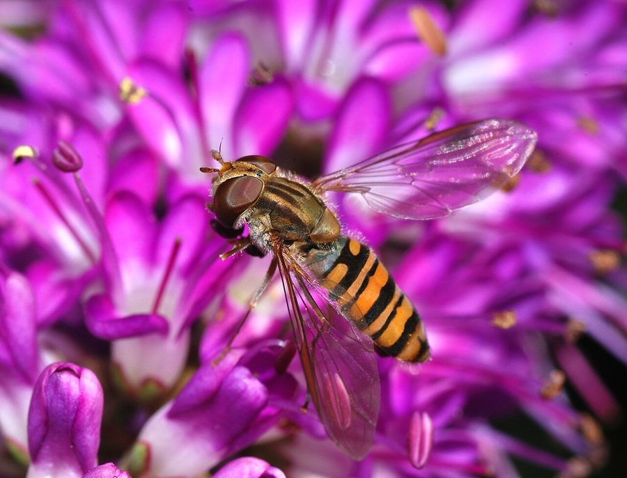

होवरफ्लाईMarmalade Hoverfly
Episyrphus balteatus · Syrphidae · INS-0068

- Scientific name
- Episyrphus balteatus (De Geer, 1776)
- Family
- Syrphidae
- Hindi
- होवरफ्लाई / मँडराने वाली मक्खी
- Status here
- native
- IUCN
- not evaluated
When to look कब देखें
Present all year.
Uses and possibilities उपयोग और संभावनाएँ
Drawn from the documented uses in the profile below, where each is labelled traditional, current or a research lead. All uses →
संतरी होवरफ्लाई / Marmalade Hoverfly
Episyrphus balteatus (De Geer, 1776) — Syrphidae
संतरी होवरफ्लाई — पूर्वी उत्तर प्रदेश के सभी खेतों, बागों और सड़क किनारे फूलों पर मँडराने वाली एक छोटी, लाल-पीली धारीदार मक्खी। इसका शरीर काला होता है, लेकिन पेट पर चमकीली नारंगी-पीली पट्टियाँ होती हैं जो संतरे के जैम (marmalade) जैसी दिखती हैं। इसके लार्वा सरसों के खेतों के लिए सबसे महत्वपूर्ण माहूँ-खोरों में से एक है। एक लार्वा अपने जीवन में सैकड़ों माहूँ खा सकता है। वयस्क फूलों पर नृत्य करते हैं, पंखों को मँडराते हैं, और परागण में मदद करते हैं। सरसों का सबसे बड़ा मित्र।
Quick Identification त्वरित पहचान
| Feature | Description |
|---|---|
| Size | Small fly, body length 8-10 mm |
| Colour | Black thorax with striking orange-yellow and black bands on the abdomen |
| Pattern | Alternating bands of dark and bright orange-yellow, resembling marmalade stripes |
| Wings | Clear, held nearly horizontally at rest; characteristic hovering flight |
| Eyes | Large, covering most of the head; excellent vision for predation |
| Behaviour | Hovers motionless in air, then darts; visits flowers repeatedly |
Field tip: A small fly with orange and black striped abdomen, hovering near flowers or moving among aphid-infested plants. The distinctive colour pattern and hovering behaviour (unlike regular flies that run or sit) make it unmistakable. Very common on Indian Mustard and other cruciferous crops.
हिंदी — कैसे पहचानें: छोटी काली मक्खी, पेट पर चमकीली नारंगी-पीली पट्टियाँ। हवा में एक जगह तैरती हुई मँडराती है। सरसों के खेत में माहूँ पर।
Morphology आकारिकी
Biometrics (typical measurements for north Indian populations):
| Measurement | Range |
|---|---|
| Body length | 8-10 mm |
| Wing length | 7-9 mm |
| Wing span | 15-19 mm |
Body structure: The head is predominantly occupied by two large compound eyes that nearly meet at the top; females have a small gap between eyes, males have eyes touching. Antennae are short and inconspicuous. The thorax is solid black or dark brown. The abdomen is the distinctive feature: predominantly black with alternating wide bands of bright orange-yellow or golden colour, creating a banded appearance resembling marmalade. The wings are clear, membranous, held partly open in an inverted V at rest.
Flight apparatus: The wings have a characteristic pattern of veins; the fly can hover by rapid wing beats and can move laterally while hovering.
Sexual dimorphism: Males have holoptic eyes (meeting at the top); females have dichoptic eyes (separated). Females are slightly larger.
Life Cycle / Phenology जीवन चक्र
| Stage / Month | Event |
|---|---|
| March–October | Main breeding season; multiple overlapping generations (up to 5 per year in warm climates) |
| Egg | Female lays tiny, whitish eggs singly or in small groups on or near aphid colonies on plants |
| Larva | Maggot-like, legless, translucent green or brown; 1-2 weeks; consumes 300-500 aphids |
| Pupa | Forms in puparium (hardened larval skin); pupal stage 3-10 days |
| Adult | Emerges, feeds on nectar and pollen, mates; lifespan 2-4 weeks |
| November–February | Reduced activity; some puparia overwinter; adults sporadic |
हिंदी: गर्मी में एक महीने में एक पीढ़ी; साल में पाँच भी हो सकती हैं। अंडे माहूँ के पास; लार्वा पारदर्शी, हरा, सैकड़ों माहूँ खाता है।
Host Plants or Prey आहार
Larval prey:
- Primary: Mustard aphids (Lipaphis erysimi), cotton aphids (Aphis gossypii), and pea aphids (Acyrthosiphon pisum).
- Secondary: Whiteflies, scale insects, and other soft-bodied insects.
- Associated crops: Indian Mustard, wheat, pulses, cruciferous vegetables.
Adult food sources:
- Nectar and pollen from a wide range of flowers: Mustard, radish, sesame, buckwheat, and wild flowers.
- Honeydew (sweet secretion of aphids).
Predators / Natural Enemies शत्रु
- Spiders: Web-building and jumping spiders on plants.
- Small birds: Flycatchers and other insectivorous birds.
- Dragonflies: Occasionally prey on adults in flight.
- Parasitoid wasps: Small wasps lay eggs in larvae or puparia.
Agricultural / Human Relevance कृषि प्रासंगिकता
One of the most important biocontrol agents.
- Crop pest control: The larva is an extremely efficient aphid predator, consuming 300-500 aphids in its lifetime. A field with high hoverfly populations can maintain aphid levels below economic thresholds without pesticide spraying.
- Integrated Pest Management (IPM): Recognized globally as a key biocontrol agent in organic and conventional farming systems.
- Flowering margins: Farmers can enhance hoverfly populations by maintaining strips of flowering plants along field margins, providing nectar for adults and preferred oviposition sites.
Pollination. Adult hoverflies visit a wide range of flowers while feeding, providing pollination services to crops and wild plants.
Today. Abundant in unfed agricultural systems; under threat from broad-spectrum pesticides and loss of flowering margins.
Research direction (a lead, not a result). Determining the minimum width and floral composition of flowering field margins in Basti that sustains hoverfly populations throughout the crop season would provide practical guidance for designing field margins that maximize pest control while minimizing land loss.
हिंदी: किसान के लिए सबसे अच्छी मक्खी। एक लार्वा सैकड़ों माहूँ खाता है। खेत की मेड़ पर अगर सरसों और तिल के फूल हों तो होवरफ्लाई ज़्यादा होती है। कीटनाशकों से मारी जाती है।
Expected Locally स्थानीय रूप से अपेक्षित
Not a field record. Written from published accounts for eastern Uttar Pradesh. No confirmed local sighting yet — if you have seen it, that is what the atlas needs.
अभी तक स्थानीय पुष्टि नहीं। यह विवरण प्रकाशित स्रोतों से है, किसी अवलोकन से नहीं।
To be expected on all crop plants and flowering weeds throughout Basti district from March to October, particularly abundant during the crop season when aphids are present. Most visible in morning and early afternoon hours when flowers are open. Look on Indian Mustard, wheat, and vegetable crops with aphid infestations.
Distribution वितरण
Global range: Holarctic distribution (across temperate regions of the Northern Hemisphere and extending into Africa and Asia); one of the most widely distributed syrphid flies.
In India: Throughout the country, particularly abundant in the Gangetic plain where cruciferous crops are grown.
In Uttar Pradesh: Abundant in all agricultural regions; major biocontrol agent in winter crops.
In Basti district / eastern UP: Expected on all crops during the main growing season; possibly the single most abundant predatory insect in winter crop fields.
Research Questions शोध प्रश्न
Anyone can investigate these | कोई भी इन प्रश्नों की जाँच कर सकता है
- How many aphids can a single hoverfly larva consume before it pupates? / एक होवरफ्लाई लार्वा कितने माहूँ खा सकता है? — Keep one larva in a jar with marked aphids and count daily.
- On which flowering plant does the female hoverfly lay eggs most frequently? / किस फूल के पौधे पर सबसे ज़्यादा अंडे देती है? — Monitor egg counts on different plants weekly.
- How long does the complete life cycle take in summer vs. winter? — Rear pupae indoors and record emergence time.
- What is the relationship between field margin floral diversity and hoverfly abundance? — Compare hoverfly numbers in fields with different margin floras.
- Can you culture hoverflies in a jar to supply to farmers? — Attempt to maintain a colony on mustard plants infested with aphids.
Similar Species मिलती-जुलती प्रजातियाँ
| Species | How to tell apart | हिंदी |
|---|---|---|
| Sphaerophoria rueppellii (Spherical Hover Fly) | Slightly larger; more yellow abdominal bands; body more rounded | गोलाकार होवरफ्लाई — पीली पट्टियाँ, गोल शरीर |
| Narcissus Bulb Fly (Merodon equestris) | Larger (12-15 mm); hairy; marbled pattern, not clean bands; different ecology | प्याज़ की मक्खी — बड़ी, रोएँदार |
| Small hoverflies (Platystomatidae) | Smaller (5-6 mm); patterned wings (not clear); lack clear marmalade bands | छोटी मक्खी — धारीदार पंख |
Field rule: A small fly with alternating orange-yellow and black bands on the abdomen, hovering near flowering plants and aphid colonies, is Episyrphus balteatus.
Taxonomy & Classification वर्गीकरण
Original description. Described by De Geer in 1776 in Mémoires pour servir à l'histoire des insectes as Syrphus balteatus. Type locality is Europe. The genus Episyrphus was established later. The specific name balteatus (meaning "banded") refers to the distinctive abdominal bands.
Subspecies. Monotypic (single species, no subspecies recognized); populations are fairly uniform worldwide.
Family and order placement. Order Diptera (true flies), family Syrphidae (hoverflies or flower flies). The Syrphidae are among the most beneficial insect families for pest control.
Phylogenetic notes. Episyrphus balteatus is one of the cosmopolitan syrphid species, suggesting a long association with human-cultivated crops and an ability to exploit pesticide-resistant niches.
IUCN status rationale. Not formally assessed. Extremely abundant and widespread; no conservation concerns.
Photo Gallery फोटो गैलरी
No photos yet — add field photos to media/species/marmalade_hoverfly/ and run node scripts/sync_photos.js.
Wanted:
- Adult hovering near flowers
- Adult feeding on pollen or nectar
- Larva on leaf with aphids
- Close-up of distinctive banded abdomen
References संदर्भ
- De Geer, C. (1776). Mémoires pour servir à l'histoire des insectes. Vol. 6, p. 108. [original description]
- Diptera.info (2017). Syrphidae of Britain and Ireland: Episyrphus balteatus. Retrieved from diptera.info
- Rotheray, G. E. & Gilbert, F. S. (1999). Phylogeny of the Syrphidae (Diptera). Systematic Entomology, 24, 56-86.
- Poorani, J., Rashmi, R., & Pandey, A. K. (2006). An annotated list of aphidophagous Syrphidae (Diptera) of India. Indian Journal of Entomology, 67(4), 245-265.
- Gopal, S., Pant, N. C., & Panwar, K. S. (1992). Seasonal abundance of syrphid flies and their contribution to biological control of mustard aphid (Lipaphis erysimi). Indian Journal of Entomology, 54(2), 120-130.
- GBIF Occurrence Data — Episyrphus balteatus, India (2010-2025). GBIF taxon key: 1280159.
Source file: species/fauna/insects/marmalade_hoverfly.md